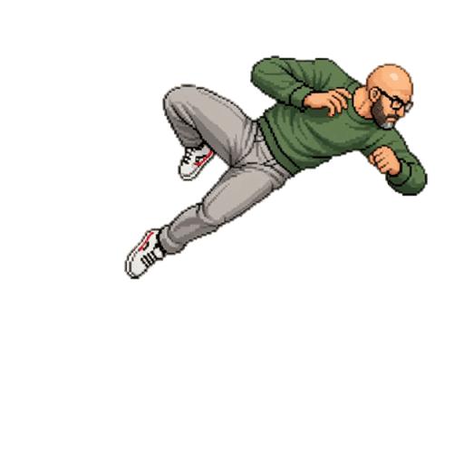
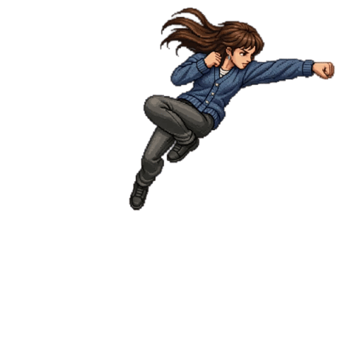
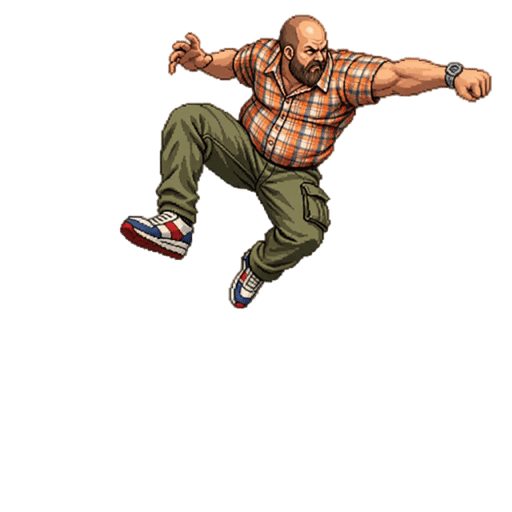
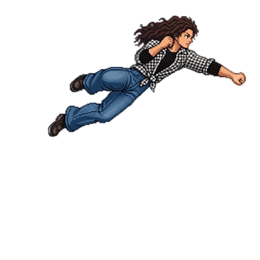
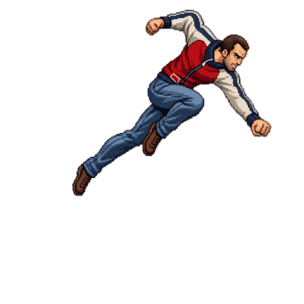
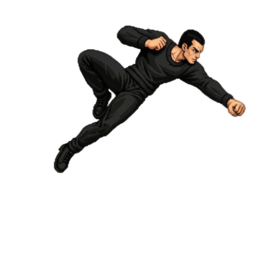
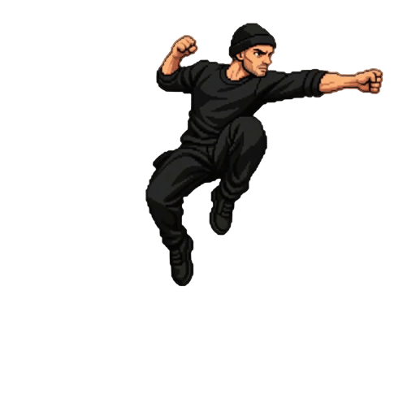
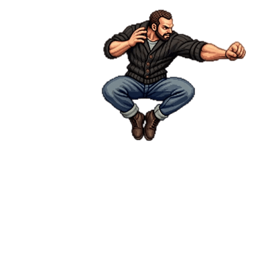
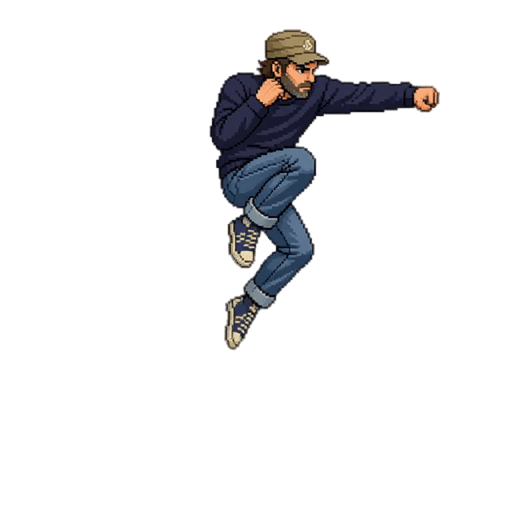

Apri la mossa nella demoPugno leggero in salto · Timing
Aggiornamento 24 novembre 2026. Nove personaggi, spritesheet AutoSprite Light Punch Jump. Stesso timing del Pugno leggero: la posa di impatto scelta inizia a 250 ms e il ciclo termina a 500 ms a velocità 1×. Durate variabili prima e dopo il marcatore. Il frame indicato nella tabella parte da 1; gli intervalli sorgente e i file JSON partono da 0.
Selezionate le ultime versioni disponibili, mantenendo gli intervalli salvati e applicando il taglio una sola volta. Tutti gli intervalli contengono preparazione e colpo, senza recupero: vengono eseguiti avanti e poi al contrario, senza duplicare il frame di inversione. Le pose estese successive al primo impatto restano nella sequenza. Il ciclo torna alla guardia in aria iniziale, con loop attivo per default. La velocità salvata su AutoSprite è un metadato e non modifica questi timing.
152 celle sorgente e 295 celle di playback verificate pixel per pixel dopo l’esportazione. Dimensioni originali 512×512, margini, scala e colori conservati. Nessuna generazione AutoSprite: 0 crediti.
Scarica i timing CSV
| Personaggio | Impatto | Frame (da 1) | Impatto | Totale | Durata frame prima / dopo | Intervallo sorgente (da 0) | Velocità salvata |
|---|
| ALBERTO |  | 12 / 31 | 250 ms | 500 ms | 22.73 / 12.50 ms | 0–15 (16 celle) | 2× (informativo) |
|---|
| Elisa |  | 14 / 33 | 250 ms | 500 ms | 19.23 / 12.50 ms | 0–16 (17 celle) | 2× (informativo) |
|---|
| FABIO-CLARA |  | 7 / 17 | 250 ms | 500 ms | 41.67 / 22.73 ms | 0–8 (9 celle) | 2× (informativo) |
|---|
| FRA-TAVARONE |  | 8 / 21 | 250 ms | 500 ms | 35.71 / 17.86 ms | 0–10 (11 celle) | 2× (informativo) |
|---|
| MARSAN |  | 17 / 33 | 250 ms | 500 ms | 15.62 / 14.71 ms | 0–16 (17 celle) | 2× (informativo) |
|---|
| Oscar |  | 26 / 57 | 250 ms | 500 ms | 10.00 / 7.81 ms | 0–28 (29 celle) | 4× (informativo) |
|---|
| PEPPO |  | 21 / 43 | 250 ms | 500 ms | 12.50 / 10.87 ms | 0–21 (22 celle) | 4× (informativo) |
|---|
| PIPPO |  | 14 / 33 | 250 ms | 500 ms | 19.23 / 12.50 ms | 0–16 (17 celle) | 4× (informativo) |
|---|
| SBOZ |  | 11 / 27 | 250 ms | 500 ms | 25.00 / 14.71 ms | 0–13 (14 celle) | 2× (informativo) |
|---|